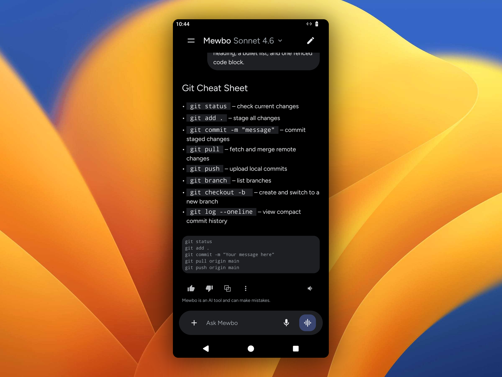
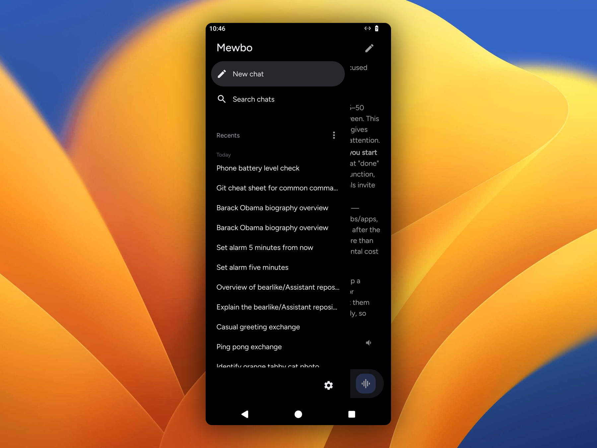

Chat and revisit past work¶
You type in the composer at the bottom and the reply streams in above it. Every conversation is saved as a session on your server, so you can return to it from Aura or from any other client.

Streaming chat¶
Aura renders markdown live, so headings, lists, code, and emphasis appear as the reply streams rather than as raw text that reformats at the end.
The action row under each finished reply carries a thumbs up and down, copy, select text, and the speaker button covered in Voice.
Tool and agent activity¶
Aura shows the work behind an answer above the reply it belongs to, so you read the answer last. Everything stays collapsed by default and you open only what you want to inspect.
- Tool calls fold into a single row per turn, reading
Using N toolswhile the work runs andUsed N toolswhen it settles. Tap it to expand the calls, and tap a call to see its input and result. - Plans show as a checklist that fills in as steps complete.
- Sub-agents show as a small row naming the sub-agent and its status. See Sub-agents for how delegation works.
The session rail¶
Open the navigation drawer to see your recent conversations, grouped into Today, Previous 7 days, and Older. A running conversation shows a small dot. Tap any row to reopen it where it left off.

The Recents filter switches between chats you started on this phone, the default view, and all of your sessions from every client.
Rename or archive a session¶
Press and hold a session in the rail. A sheet slides up with two actions.
- Rename opens a field with the current title selected. Type a new one and confirm.
- Archive removes the session from your recent list without destroying it.
There is no delete
Archive is the strongest action Aura offers. Your history stays on the server.
Attachments¶
Tap the plus button in the composer to attach a file. Choose Photos for an image, or Files for a PDF, a common office format, or a text format such as CSV, Markdown, and JSON. Each attachment appears as a removable chip, then as a card above your message once sent.
Images need a model that can see them. If your selected model does not support vision, the Photos option is disabled and tells you to pick a vision model. Documents work with any model, because the assistant reads their contents as part of your message.
Pick a model¶
Tap the model name in the title bar to open the picker. Popular models are listed first with friendly names over their full identifiers, and a More models row reveals the rest. The list comes from your server, so you see exactly the models your deployment offers. You can switch at any time, even while a conversation is running.
Scope a session to a project and tools¶
By default a new chat runs in a temporary workspace with every tool available. Change both from the composer's plus menu, in its Session section.
- Project attaches the conversation to one of your registered projects, so the assistant works in that project's directory instead of a temporary one. The default is
Temporary, meaning no project. - Tools narrows what the assistant may use. Tool groups such as connected servers and product features each have a switch, and expanding a group reveals individual tools.
Scope is fixed once a turn is in flight. You set it when you start a chat, and after that it is shown but not editable. Until then an indicator above the composer summarizes the scope and opens the same options. Your default project comes from Settings, and a choice made for one chat overrides it until the next new one.
Next steps¶
- Voice. Dictate turns, hear replies read aloud, and raise the overlay without touching the phone.
- Device Tools. Let the assistant act on the phone itself.